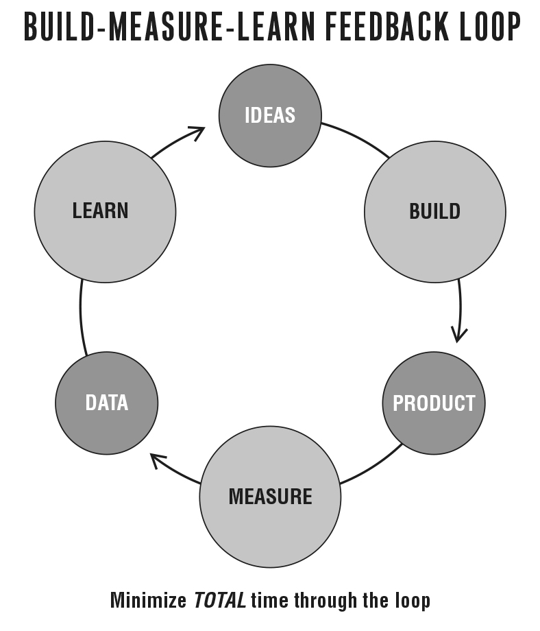

How Vision Leads to Steering
At its heart, a startup is a catalyst that transforms ideas into products. As customers interact with those products, they generate feedback and data. The feedback is both qualitative (such as what they like and don’t like) and quantitative (such as how many people use it and find it valuable). As we saw in Part One, the products a startup builds are really experiments; the learning about how to build a sustainable business is the outcome of those experiments. For startups, that information is much more important than dollars, awards, or mentions in the press, because it can influence and reshape the next set of ideas.
We can visualize this three-step process with this simple diagram:

This Build-Measure-Learn feedback loop is at the core of the Lean Startup model. In Part Two, we will examine it in great detail.
Many people have professional training that emphasizes one element of this feedback loop. For engineers, it’s learning to build things as efficiently as possible. Some managers are experts at strategizing and learning at the whiteboard. Plenty of entrepreneurs focus their energies on the individual nouns: having the best product idea or the best-designed initial product or obsessing over data and metrics. The truth is that none of these activities by itself is of paramount importance. Instead, we need to focus our energies on minimizing the total time through this feedback loop. This is the essence of steering a startup and is the subject of Part Two. We will walk through a complete turn of the Build-Measure-Learn feedback loop, discussing each of the components in detail.
The purpose of Part One was to explore the importance of learning as the measure of progress for a startup. As I hope is evident by now, by focusing our energies on validated learning, we can avoid much of the waste that plagues startups today. As in lean manufacturing, learning where and when to invest energy results in saving time and money.
To apply the scientific method to a startup, we need to identify which hypotheses to test. I call the riskiest elements of a startup’s plan, the parts on which everything depends, leap-of-faith assumptions. The two most important assumptions are the value hypothesis and the growth hypothesis. These give rise to tuning variables that control a startup’s engine of growth. Each iteration of a startup is an attempt to rev this engine to see if it will turn. Once it is running, the process repeats, shifting into higher and higher gears.
Once clear on these leap-of-faith assumptions, the first step is to enter the Build phase as quickly as possible with a minimum viable product (MVP). The MVP is that version of the product that enables a full turn of the Build-Measure-Learn loop with a minimum amount of effort and the least amount of development time. The minimum viable product lacks many features that may prove essential later on. However, in some ways, creating a MVP requires extra work: we must be able to measure its impact. For example, it is inadequate to build a prototype that is evaluated solely for internal quality by engineers and designers. We also need to get it in front of potential customers to gauge their reactions. We may even need to try selling them the prototype, as we’ll soon see.
When we enter the Measure phase, the biggest challenge will be determining whether the product development efforts are leading to real progress. Remember, if we’re building something that nobody wants, it doesn’t much matter if we’re doing it on time and on budget. The method I recommend is called innovation accounting, a quantitative approach that allows us to see whether our engine-tuning efforts are bearing fruit. It also allows us to create learning milestones, which are an alternative to traditional business and product milestones. Learning milestones are useful for entrepreneurs as a way of assessing their progress accurately and objectively; they are also invaluable to managers and investors who must hold entrepreneurs accountable. However, not all metrics are created equal, and in Chapter 7 I’ll clarify the danger of vanity metrics in contrast to the nuts-and-bolts usefulness of actionable metrics, which help to analyze customer behavior in ways that support innovation accounting.
Finally, and most important, there’s the pivot. Upon completing the Build-Measure-Learn loop, we confront the most difficult question any entrepreneur faces: whether to pivot the original strategy or persevere. If we’ve discovered that one of our hypotheses is false, it is time to make a major change to a new strategic hypothesis.
The Lean Startup method builds capital-efficient companies because it allows startups to recognize that it’s time to pivot sooner, creating less waste of time and money. Although we write the feedback loop as Build-Measure-Learn because the activities happen in that order, our planning really works in the reverse order: we figure out what we need to learn, use innovation accounting to figure out what we need to measure to know if we are gaining validated learning, and then figure out what product we need to build to run that experiment and get that measurement. All of the techniques in Part Two are designed to minimize the total time through the Build-Measure-Learn feedback loop.